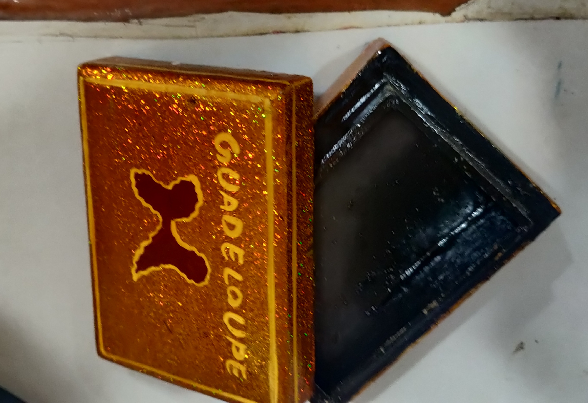
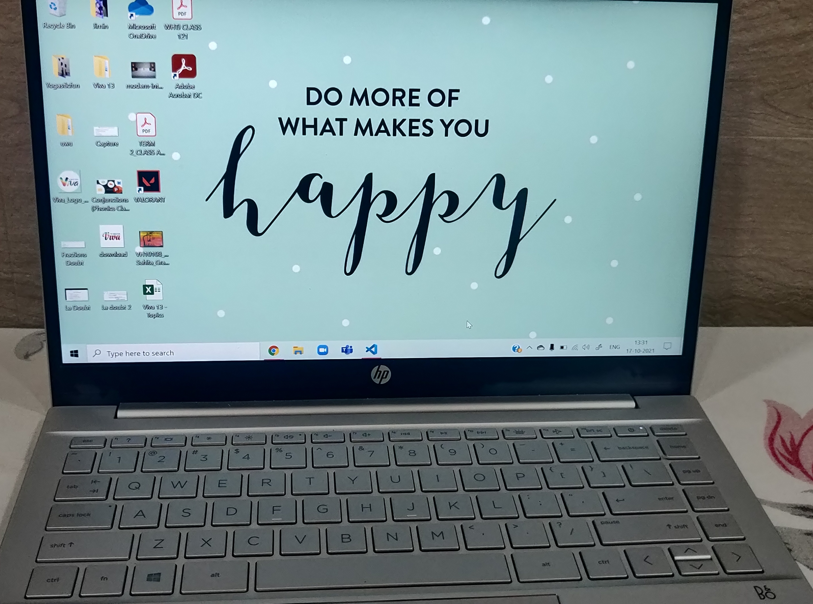
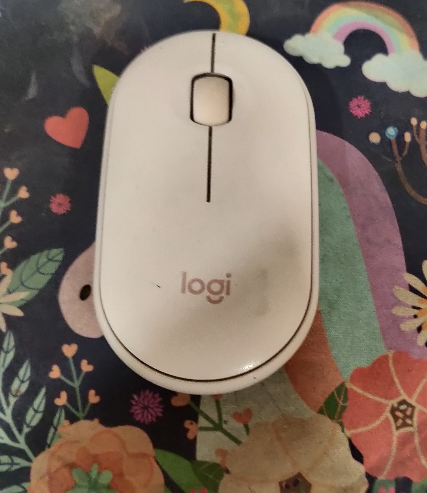
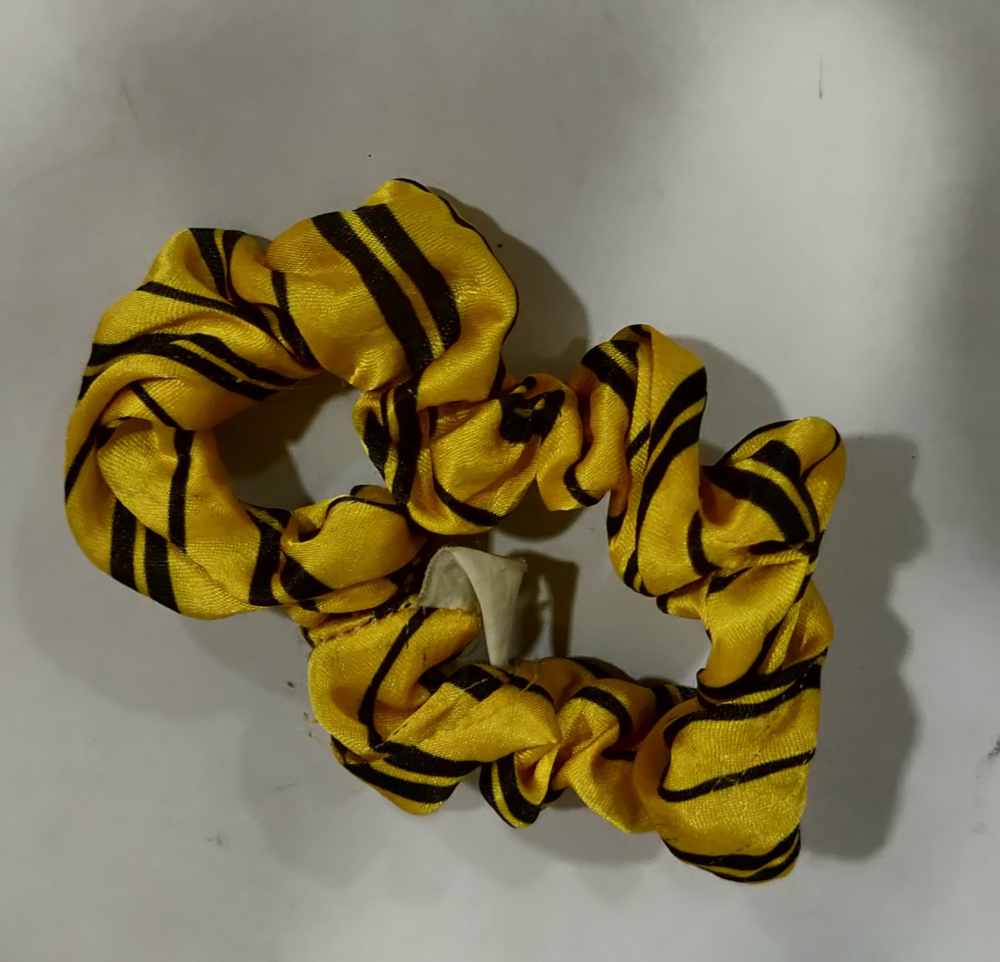

Case Study(Home Items)- Comparing results of MobileNet and Google Lens and even Microsoft Asure!

Object: Box
Microsoft Asure: A close up of a sign
Google Lens results: Wallet
MobileNet results: Purse
None of them are right

Object: Laptop
Google Lens results: HP
MobileNet results: Lapop,Laptop Computer
Microsoft Asure: A screenshot of an open laptop computer sitting on the top of a table
Google Lens is more accurate than MobileNet and Microsoft Asure

Object: Mouse
Google Lens results: Logitech Pebble Pebble Mouse Wireless
MobileNet results: Mouse , Computer Mouse
Microsoft Asure: A stuffed animal on a table
Google Lens is more accurate than MobileNet and MobileNet is more accurate than Microsoft Asure.So we can say that Google Lens is the most accurate

Object: Scrunchie
Google Lens results: Scrunchie
MobileNet results: Coffee Mug
Microsoft Asure: A close up of a Banana
Google Lens is the most accurate